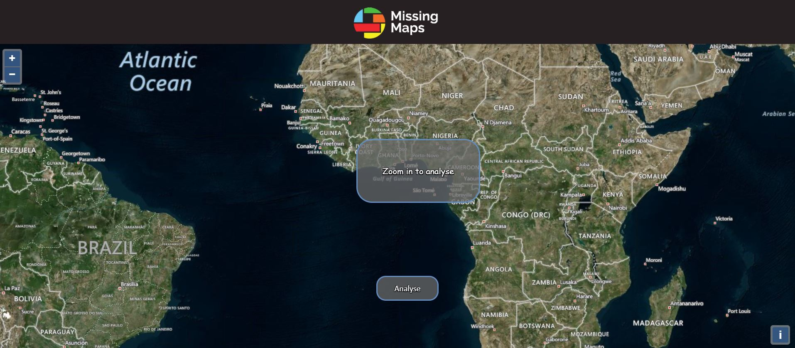
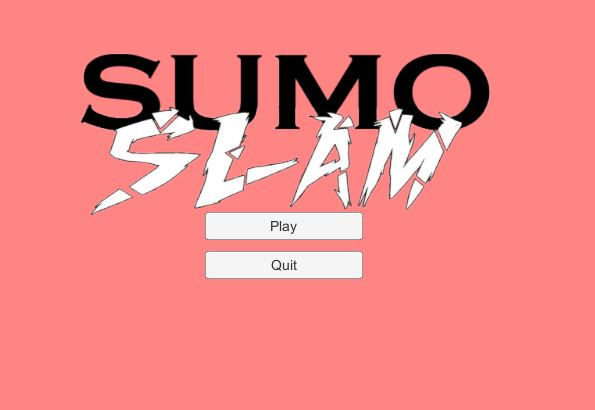
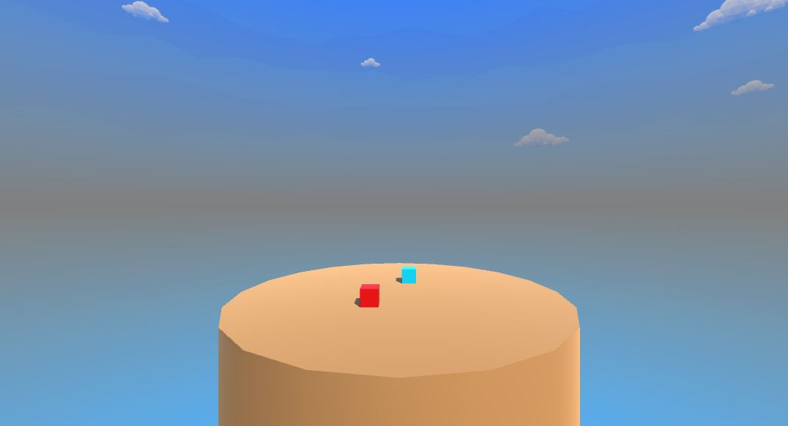
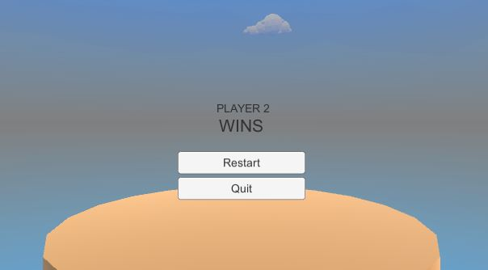
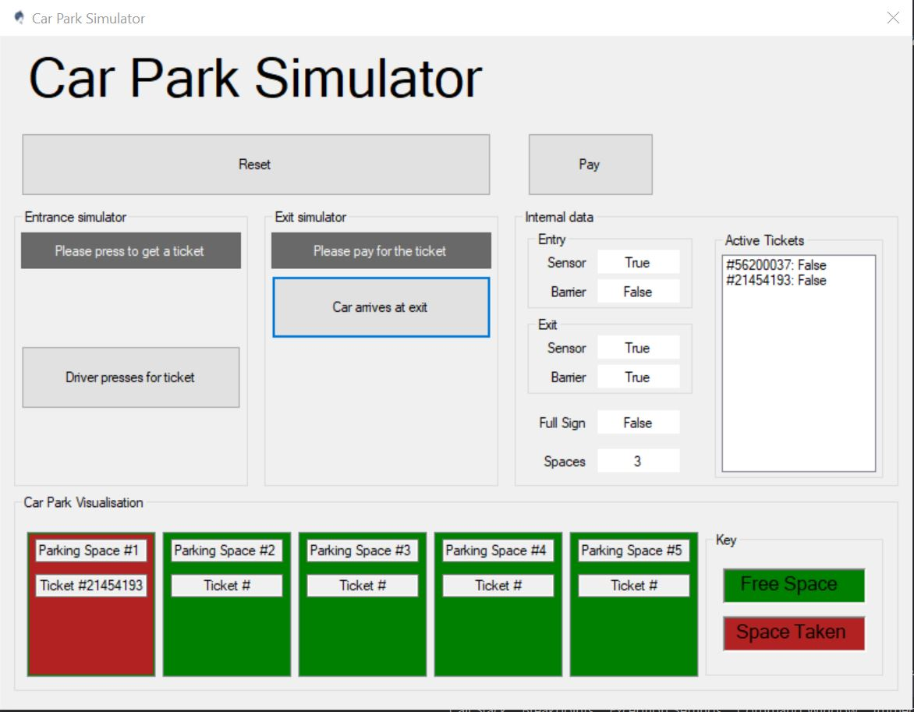
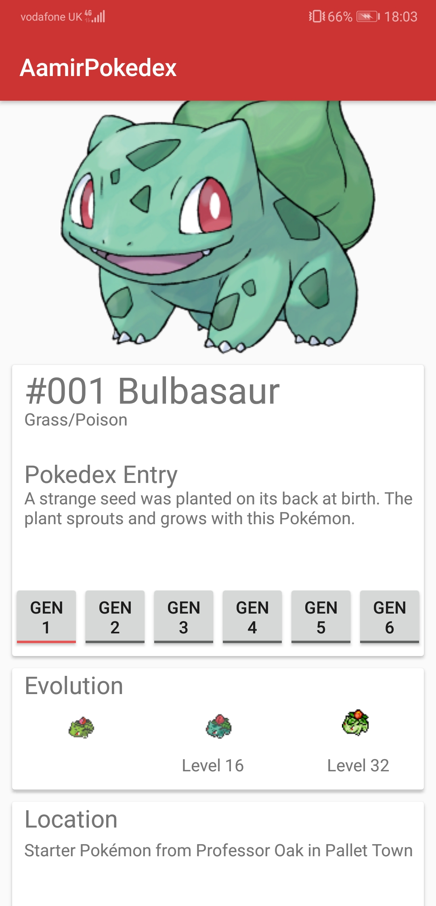

My Projects
IBM WATSON Missing maps
Worked with John Mcnamara from IBM to produce a web application that scans areas on a map and determines if there is signs of life in the selected area. This can be buildings, water sources vegetation etc. The maps are scanned and analysed using IBM Watson which was trained using various different map resources.
TRY IT YOURSELF
Volcano Escape
Volcano escape was the result of a university group project. The task was to make a game in javascript and for it to be a simple 2d Doodle jump like game, however we wanted to learn new technology so we went above and beyond utilised the threeJS library to make the game 3d.


PLAY ONLINE
Sumo Slam
Sumo slam was my first external project outside of university work. The aim of the game is to knock the opponent player out of the ring. You have access to boost and shield powerups which add more layers of depth to the game. This game was developed using Unity and C# object-oriented programming. However due to my lack of experience in modelling tools such as blender, I was unable to import fitting models for the game so the players are cubes. In the future I would love to revisit this game and add models, more levels and custom music.
  DOWNLOAD
Car Park Simulator
I started developing an android application which is an encyclopedia of pokemon from the popular games. I used android studio and Java object oriented programming make it. This app is unfinished mainly due the fact that there are over 800 unique pokemon to make pages for, and doing this would take a large amount of time..
DOWNLOAD
Pokedex App
I started developing an android application which is an encyclopedia of pokemon from the popular games. I used android studio and Java object oriented programming make it. This app is unfinished mainly due the fact that there are over 800 unique pokemon to make pages for, and doing this would take a large amount of time..
DOWNLOAD
Movie Dating App
After developing the pokedex application, I wanted to move onto something bigger which had more practical use. I gathered 4 of my friends who were enthusiastic about the project to help me achieve this. This dating app functions in a simliar way to Tinder, with its swiping system. However matches are based on users tv show/movie preferences. We are currently at the early stages of development..